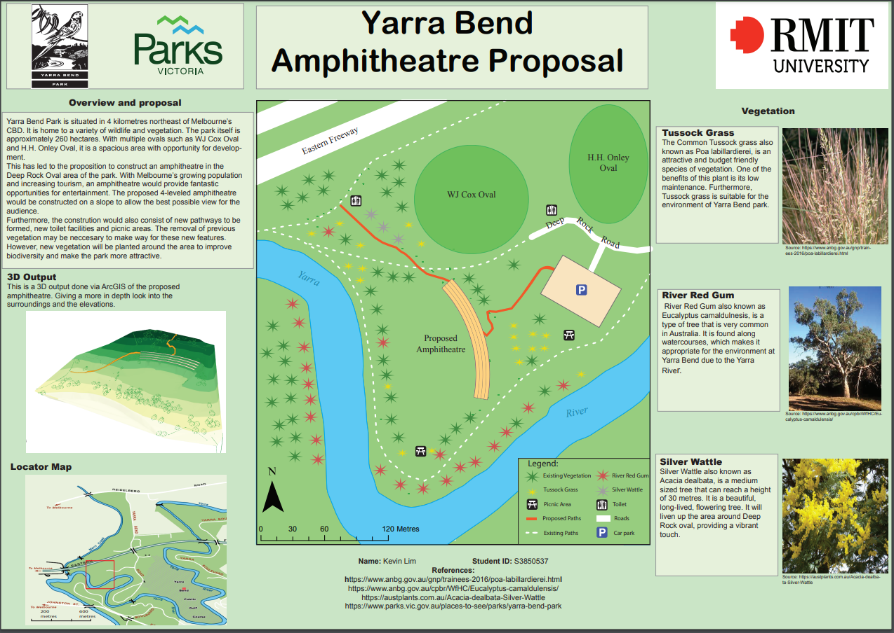
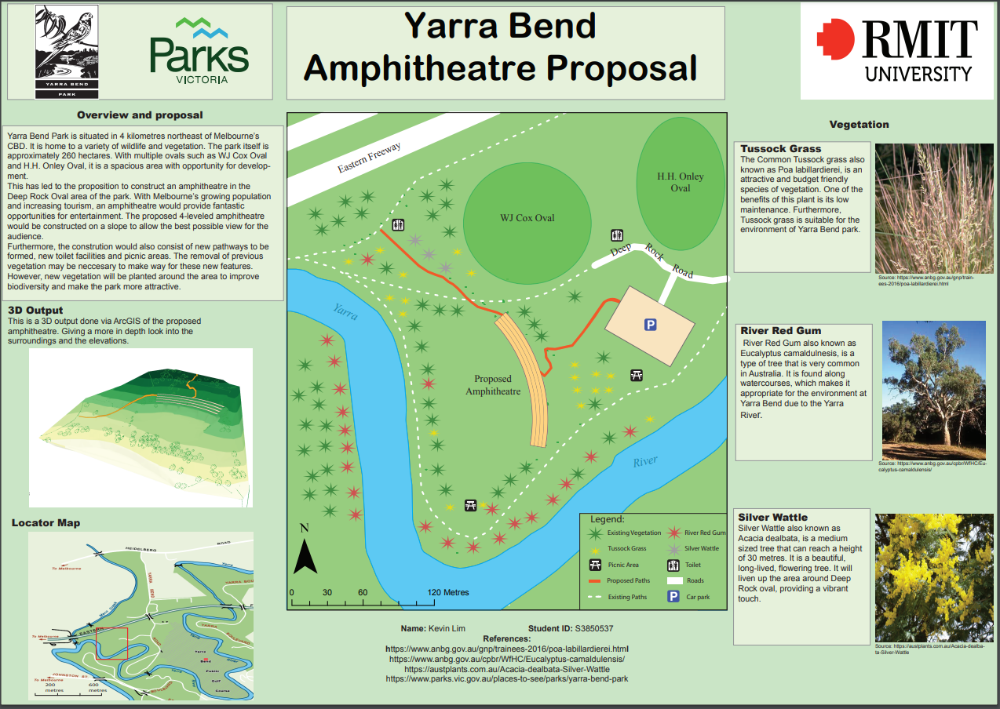

A brief introduction about myself is that I am born and raised in Melbourne, Australia and as of September 2023, I am in my fourth and final year of the Bachelor of Appled Science (Surveying) (Honours) course. My surveying-related interests include working with LiDAR, 3D modelling of infrastructure, photogrammetry and cadastral law. My current geospatial/surveying projects involve the assessment of SLAM drift and misalignment in featureless landscapes. I hope to further develop my skills in surveying, communuication and leadership after graduation.
My own personal hobbies include travelling, movies, TV shows and the Carlton Football Club!
Below is the final map that I have created as part of my course:
Note: If map display is too small, right-click the image and 'Open in new tab' to allow zooming of the map.
For the 2020 version of the course which I completed, the assignment was about the proposal of creating an amphitheatre at Deep Rock Oval located at Yarra Bend Park. The main deliverables of the subject consisted of producing:
The topographic survey map was created using surveying data obtained on the field using a total station at Deep Rock Oval, Yarra Bend Park. The topographic map was made using LISCAD.SEE and LISCAD.CAD. The 3D generated scene was created using the ArcGIS Pro. The proposed pathway was also created using ArcGIS Pro by using the GIS program to generate the pathway based on slope angle and the amphitheatre based on z-values. The final map used Adobe Illustrator to create the map along with ArcGIS for exporting the 2D amphitheathre image and ArcScene for exporting the image of the 3D scene.
Note: If map display is too small, right-click the image and 'Open in new tab' to allow zooming of the map.
 

Throughout my tenure, I had the unique opportunity to contribute to diverse projects, including those for Melbourne Water, which introduced me to the challenges and strategies inherent in the field of surveying. Engaging in hands-on experiences, I witnessed the transformation of lands from farms to fully developed estates and participated in various stages of land development, acquiring a breadth of technical skills along the way. My experience at SMEC has also allowed me to explore advanced technologies like LiDAR, where I operated and processed terrestrial laser scans for various significant projects, enhancing my practical knowledge and sparking my enthusiasm for cadastral surveying. This hands-on exposure bridged the gap between theoretical knowledge and practical application, not only making me contemplate pursuing licensure but also providing a solid foundation for my future endeavors in the surveying field.
| GIS | QGIS | ||
| Cartographic Principles | Adobe Illustrator | ||
| Remote Sensing | Photogrammetry and Drone Mapping | ||
| Web Design: HTML & CSS | Web GIS | ||
| Python Programming | SQL Database Management |
 |
 |
 |
|---|---|---|
|
Work address:
Tower 4/727 Collins St, Docklands VIC 3008 |
Email Kevin Lim here:
s3850537@student.rmit.edu.au |
Mobile:
0452 181 512 |